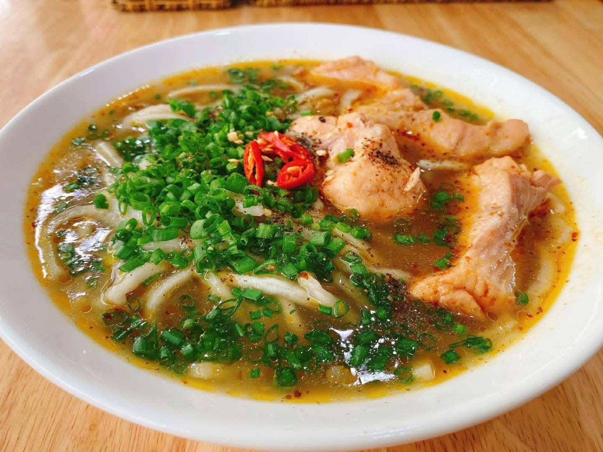
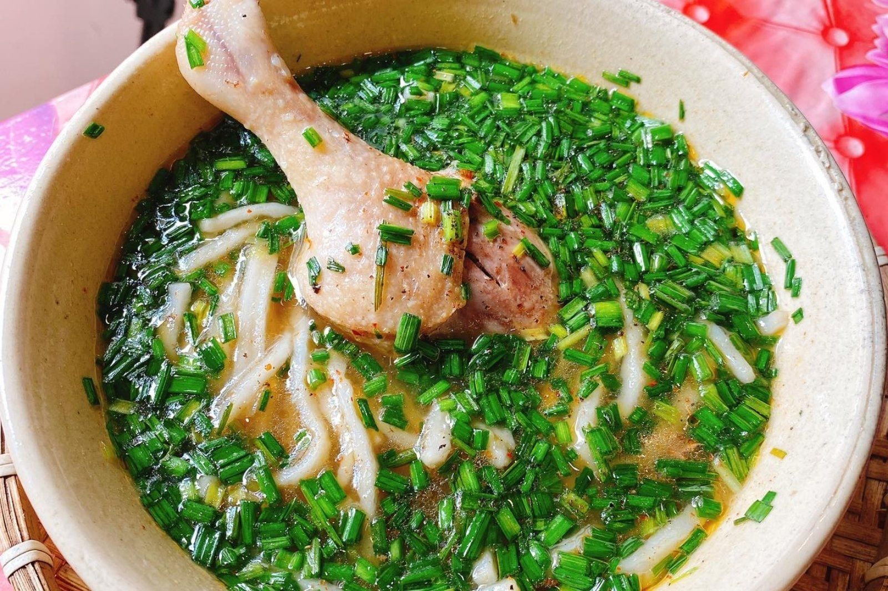
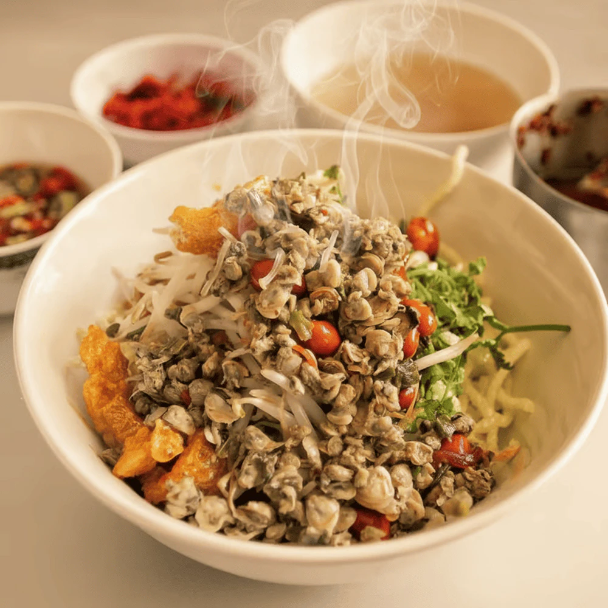
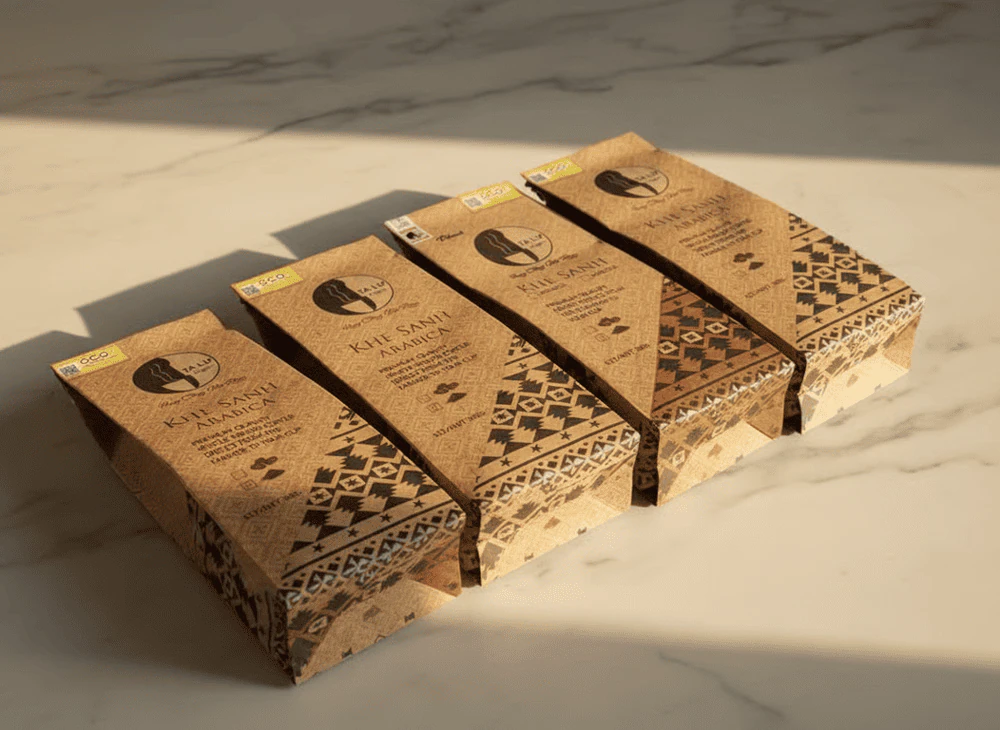
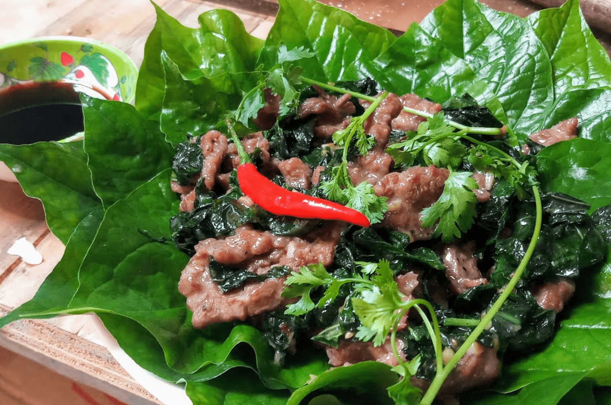

Những món ăn đặc sản ở Quảng Trị
-
Cháo bột cá lóc
Cháo bột cá lóc được chế biến từ cá lóc tươi ngon, nấu cùng nước dùng đậm đà, tạo nên một tô cháo thơm phức, ấm nóng. Vị ngọt tự nhiên từ cá lóc hòa quyện với gia vị, cùng với độ mềm mịn của bột, sẽ mang đến cho bạn một trải nghiệm ẩm thực khó quên, đặc biệt trong những ngày lạnh giá.
-
Cháo bột vịt
Một món ăn ấm bụng và bổ dưỡng, đặc biệt thích hợp cho những ngày trời se lạnh. Cháo được nấu từ những sợi bột gạo cán mỏng, dai dai, mềm mềm, không bị nát. Thịt vịt đồng được luộc chín tới, xé phay hoặc thái miếng, thấm đẫm hương vị nước dùng ngọt từ xương vịt. Thêm chút hành lá, rau răm và tiêu xay, món cháo bột vịt trở nên thơm lừng, dễ ăn và vô cùng lôi cuốn.
-
Bún hến Mai Xá
Bún hến Mai Xá là món ăn truyền thống của Quảng Trị, với bún mềm, nước dùng đậm đà được nấu từ hến tươi, mang đến một món ăn thanh mát, dễ chịu. Bún hến được ăn kèm với các loại rau sống và gia vị tạo nên một món ăn đơn giản nhưng cũng rất quyến rũ với những người đam mê ẩm thực miền Trung.
-
Cà phê Khe Sanh
Cà phê Khe Sanh được trồng tại các vùng cao nguyên, nơi có khí hậu và đất đai đặc biệt, mang đến những hạt cà phê chất lượng cao. Khi pha, cà phê có màu sắc sánh mịn và mùi hương quyến rũ, vị đậm đà, chua nhẹ, là lựa chọn tuyệt vời cho những tín đồ yêu thích cà phê nguyên chất.
-
Thịt trâu lá trơng
Món đặc sản độc đáo này thể hiện sự sáng tạo trong ẩm thực địa phương. Lá trơng là một loại lá rừng đặc trưng của Quảng Trị, có vị chát nhẹ và mùi thơm đặc biệt. Thịt trâu được chọn từ những miếng thịt tươi ngon, thái mỏng, xào nhanh tay cùng lá trơng, sả, ớt và các loại gia vị. Món ăn này có hương vị đậm đà, thơm lừng, thịt trâu mềm ngọt hòa quyện với vị chát nhẹ của lá trơng, tạo nên một trải nghiệm ẩm thực vô cùng lạ miệng và hấp dẫn.
-
Mít thấu

Bánh lọc Mỹ Chánh được làm từ bột lọc với lớp vỏ bánh trong suốt, mềm mịn, bao bọc bên trong là nhân tôm, thịt hoặc đậu xanh. Món bánh lọc này là sự hòa quyện độc đáo giữa vị ngọt, béo bùi của tôm, thịt và hương vị thanh nhẹ, giòn dai của vỏ bột lọc. Khi ăn kèm với nước mắm chua ngọt và chút rau sống tạo nên một món ăn vặt khiến bạn xuýt xoa mãi không thôi.
-
Bánh lọc Mỹ Chánh

Mít thấu được làm từ những trái mít non tươi, kết hợp với gia vị tạo nên món ăn có vị chua, ngọt vừa phải, vừa thanh mát lại vừa bùi bùi. Đây là một món ẩm thực nhẹ nhàng, dễ ăn, thích hợp cho những ngày hè oi ả hoặc là món tráng miệng tuyệt vời cho bữa cơm gia đình.